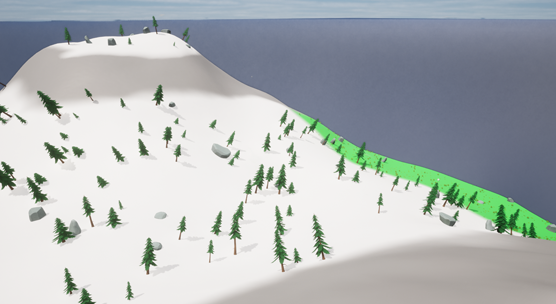

The game is supposed to be a survival game where the player is stranded on a mountainous island and must forage and hunt to be able to survive in the cold landscape. The player will have to juggle many different mechanics that will try to defeat them such as hunger, temperature and wild animals that they will find in the wilderness- such as bears. The player must collect all of the artifacts and use them to escape the island to win the game.

Setting
The setting of the game is an isolated, snowy, mountainous island surrounded by only water. There are a few parts of the island that are warm and grassy but the vast majority of the island is all mountains. There is a tiny settlement on the island, where a small number of people who explored the island in the past have collected, where you will be able to obtain: tools, food and quests.